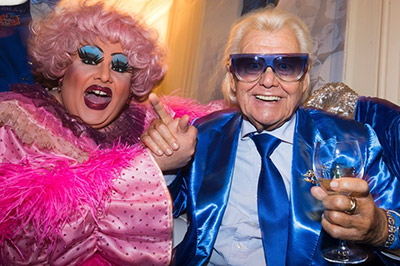

 Michou naît Michel Georges Alfred Catty1 le 18 juin 1931 à Amiens dans la Somme. Sa mère travaille dans une usine de confection. N’ayant aucune formation, il rejoint Paris au début des années 1950 et vit de petits boulots, avant de fréquenter le milieu de la nuit. Il se travestit aussi en imitant France Gall2 ou Brigitte Bardot3. Il est directeur du Cabaret Michou, au no 80 de la rue des Martyrs dans le 18e arrondissement de la capitale. Il a également sorti plusieurs singles. Michou adopte une apparence vestimentaire extravagante et kitsch, dont de fameuses lunettes bleues et un brushing décoloré, et ne fait pas mystère de son homosexualité. Michou développe le concept du cabaret-restaurant-spectacle. Après le dîner, les lumières s'éteignent et le spectacle démarre. Sur une scène minuscule, des travestis remarquablement maquillés chantent en play-back en imitant les stars du show-business, actuelles ou (le plus souvent) anciennes, dont les principales restent Dalida, Sylvie Vartan, Chantal Goya ou Édith Piaf. Il combine aussi social et business tout en œuvrant pour divertir les personnes âgées et isolées du quartier en organisant notamment tous les mois un déjeuner dans son cabaret avec les pensionnaires de la maison de retraite de la Providence, établissement voisin de la salle de spectacle. Il fait une apparition au cinéma en 1973 dans La Bonne Année, de Claude Lelouch. Il y joue son propre rôle. De 1987 à 1990, il fait partie des invités de l'émission culinaire hebdomadaire Quand c'est bon ?... Il n'y a pas meilleur ! diffusée sur FR3 et animée par François Roboth4. Pour ses 70 ans, Michou sort un disque : Michou, c'est qui ?, une « chanson-biographie ». Le 24 janvier 2005, Michou a été fait chevalier de la Légion d'honneur5 par le président Jacques Chirac3. En février 2005 sort un film-documentaire de 52 minutes, titré Michou, la vie en bleu, réalisé pour France 5 par Frédéric Lievain6. Le 31 janvier 2007, Michou est mis à l'honneur par son département d'origine, la Somme, en recevant un trophée lors de la « Nuit des talents » organisée par le Conseil général de la Somme. Il fête ses 80 ans le 20 juin 2011 dans la célèbre salle, classée monument historique, du Trianon, entouré de plusieurs personnalités comme Nana Mouskouri, Jean-Paul Gaultier, Dorothée, Michèle Torr, Matt Pokora, Annie Cordy, Alain Turban, Amanda Lear, Johnny Hallyday, JoeyStarr, Perrette Souplex, Herbert Léonard, Jean-Jacques Debout, France Fannell, Afida Turner, Bichou mais aussi des acteurs comme Francis Huster, Rosy Varte, Anny Duperey, Marthe Mercadier ou encore Marie-Anne Chazel. Pour l'occasion, son ami Alain Turban lui compose une nouvelle chanson intitulée « 80, rue des Martyrs ». Le 25 juin 2011, Michou est un des trois parrains de la seconde Promenade de la Vache enragée. Il défile dans une 2 CV décapotable, le verre à la main, saluant le public tout le long du parcours. Il a souvent été imité et parodié par le comique Jonathan Lambert, notamment dans la Grosse Émission7. Il soutient au fil des ans plusieurs personnalités parisiennes de droite comme Joël Le Tac, Alain Juppé, Jacques Chirac, Pierre-Yves Bournazel8. Il est supporter de Nicolas Sarkozy, l'ayant notamment soutenu au Palais omnisports de Paris-Bercy le 29 avril 2007, lors de son meeting à Paris.